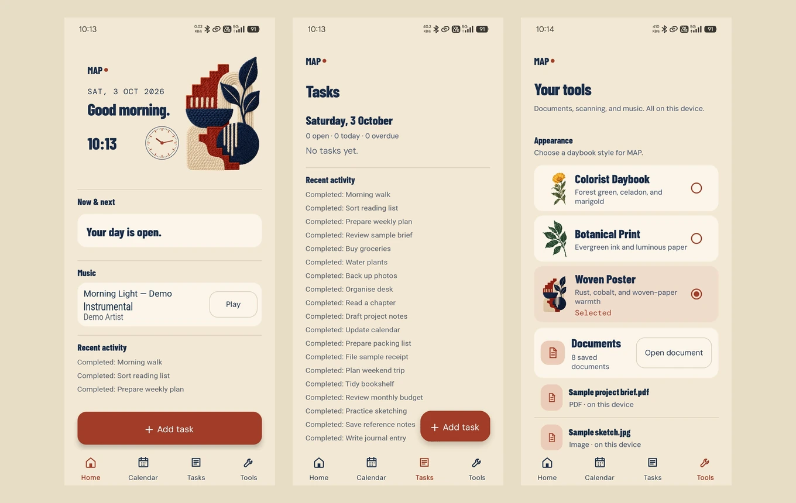

Procura
Know what needs buying. Keep purchasing organised.
Inventory, suppliers, reorder planning and purchase orders in one connected application.
View Procura project
Custom business apps and AI automation, built around how your business actually works.
Screenshot unavailable. Extract the complete preview ZIP with its assets, then reopen this page.
Actual Procura UI; isolated fictional demo records.
View Procura projectActual interfaces, not invented dashboards. Theoses is a staged sample; MAP uses edited phone captures with fictional text. Detailed screenshots live on each project page.
Purchasing, reviewable automation and everyday tools. Three projects to start with; eight to explore.
Know what needs buying. Keep purchasing organised.
Inventory, suppliers, reorder planning and purchase orders in one connected application.
View Procura projectTurn repeated tasks into reviewable workflows.
A self-hosted personal assistant and coding agent, available through the terminal, Telegram and a private dashboard.
View Theoses project
Keep everyday tools together, on your phone.
Tasks, calendar, documents, scan-to-PDF and local music in one personal Android utility.
View MAP project
Inventory, suppliers, reorder planning and purchase orders in one connected application.
Procurement and inventory workflows for a veterinary hospital, from internal requests to receipt and stock take.
A hospital dangerous-drugs register that compares physical and system counts while preserving the record.
A self-hosted personal assistant and coding agent, available through the terminal, Telegram and a private dashboard.
A Go implementation of the Theoses agent architecture, with conversation continuity and memory across channels.
Tasks, calendar, documents, scan-to-PDF and local music in one personal Android utility.
A self-directed nutrition-content project connecting research, AI-assisted drafts and structured editorial review.
A family of publishing and narrated-video workflows, grouped as one automation case study.
I’m Hafiz Jamali. I build practical software around the work I know.
My work connects veterinary procurement, inventory operations, personal organisation and AI-assisted workflows. I turn scattered information and repeated steps into tools I can use and maintain.
The projects here include operational systems, software I use myself and a self-directed content project. Each case study explains what it does—and what it does not claim.
Read my résumé (PDF)Find the repetitive steps, missing information and decisions that need a better system.
Put the core workflow in your hands early, then refine it around how your team actually works.
Connect the routine steps. Keep important decisions visible and people in control.
Tell me what your team does today, what gets repeated, and what a better workflow would look like.